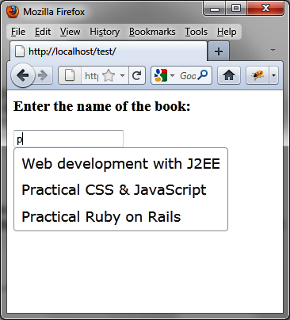

{% include JB/setup %}
{% raw %}
<div>
<div class="calibre13"></div><div class="book" title="Chapter 9. Autocompletion"><div class="book"><div class="book"><div class="book"><div class="calibre13"></div><h1 class="title1"><a id="autocompletion" class="calibre1"></a>Chapter 9. Autocompletion</h1></div></div></div><p class="calibre7">Autocompletion is a mechanism frequently used in modern websites to
  provide the user with a list of suggestions for the beginning of the word he
  has typed in a text box. He can then select an item from the list, which
  will be displayed in the input field. This feature prevents the user from
  having to enter an entire word or a set of words.</p><div class="book" title="Basic Principles of Autocompletion"><div class="book"><div class="book"><div class="book"><h1 class="title2"><a id="basic_principles_of_autocompletion" class="calibre1"></a>Basic Principles of Autocompletion</h1></div></div></div><p class="calibre7">Suppose we want to write the HTML code to display the list of
    suggestions shown in <a class="ulink" href="ch09.html#list_of_suggestions" title="Figure 9-1. List of suggestions">Figure 9-1</a>, which appears
    when users type the letter “p.” This displays a list in which each element
    contains at least one letter “p.” </p><div class="figure"><a id="list_of_suggestions" class="firstname"></a><div class="book"><div class="book"><a id="I_mediaobject9_d1e7133" class="firstname"></a></div></div><p class="title4">Figure 9-1. List of suggestions</p></div><p class="calibre7">The input field is represented by an <code class="literal">&lt;input&gt;</code> whose ID is <code class="literal">book</code>:</p><a id="I_programlisting9_d1e7146" class="firstname"></a><pre class="programlisting">&lt;script src = jquery.js&gt;&lt;/script&gt;
&lt;script src = jqueryui/js/jquery-ui-1.8.16.custom.min.js&gt;&lt;/script&gt;

&lt;link rel=stylesheet type=text/css
      href=jqueryui/css/smoothness/jquery-ui-1.8.16.custom.css /&gt;

&lt;h3&gt;Enter the name of the book:&lt;/h3&gt;
&lt;input id=book /&gt;

&lt;script&gt;

// array of items to be proposed in the list of suggestions
var books = ["Web development with J2EE", "Practical CSS &amp; JavaScript",
             "Practical Ruby on Rails", "Introduction to HTML &amp; CSS",
             "jQuery UI"];

$("input#book").autocomplete ({
  source : books
});

&lt;/script&gt;</pre><p class="calibre7">In the <code class="literal">&lt;script&gt;</code> tag of the
    HTML page, we need to indicate both the list of suggestions (<code class="literal">var books</code>) and that the input field must be
    observed in order to display the list of suggestions. To do this, simply
    indicate that the <code class="literal">&lt;input&gt;</code> field
    is managed by the jQuery UI <code class="literal">autocomplete
    ()</code> method. The <code class="literal">{source:
    books}</code> specifies options needed to display the list of
    suggestions.</p></div></div></div>

{% endraw %}

